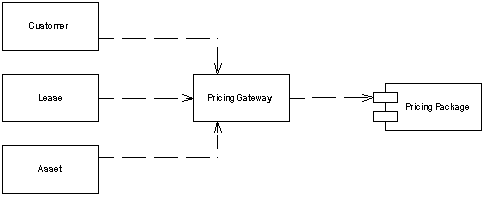

Gateway (Шлюз)

Паттерн проектирования Gateway
Описание Gateway
Объект, который инкапсулирует доступ к внешней системе и ресурсу.
Достойное ПО редко функционирует в изоляции от внешнего мира. Даже самая строго объектно-ориентированная система часто вынуждена взаимодействовать с "не объектами", например реляционная БД, CICS транзакции или структурами XML.
При доступе к такого рода внешним ресурсам, обычно используется API. Однако, API изначально являются чем-то сложным, потому что принимают во внимание структуру ресурса. Каждый, кто хочет понять какой-нибудь ресурс, должен понять его API - будь то JDBC и SQL для реляционных БД или W3C или JDOM для XML. Это делает ПО не только менее понятным, но ещё это делает изменения гораздо более сложными, например, если вы собираетесь перейти со временем с SQL на XML.
Решением здесь является обёртывание всего специального API в класс, интерфейс которого выглядит как интерфейс обычного объекта. Остальные объекты обращаются к ресурсу через этот Шлюз, который транслирует эти простые вызовы в соответствующий специальный API-код
Примеры реализации
// Gateway Pattern in JavaScript
class DatabaseGateway {
constructor(connection) {
this.connection = connection;
}
async findUserById(id) {
const query = `SELECT * FROM users WHERE id = ${id}`;
console.log(`Executing: ${query}`);
return { id, name: `User ${id}`, email: `user${id}@example.com` };
}
async createUser(userData) {
const { name, email } = userData;
console.log(`Creating user: ${name} (${email})`);
return { id: Math.floor(Math.random() * 1000), name, email };
}
}
class EmailGateway {
constructor(smtpConfig) {
this.smtpConfig = smtpConfig;
}
async sendEmail(to, subject, body) {
console.log(`Sending email to ${to}: ${subject}`);
return { success: true, messageId: `msg_${Date.now()}` };
}
}
// Usage
const dbGateway = new DatabaseGateway('connection_string');
const emailGateway = new EmailGateway({ host: 'smtp.example.com', port: 587 });
async function example() {
const user = await dbGateway.findUserById(1);
await emailGateway.sendEmail(user.email, 'Welcome', 'Welcome!');
}
example();// Gateway Pattern in C++
#include <iostream>
#include <string>
class DatabaseGateway {
private:
std::string connectionString;
public:
DatabaseGateway(const std::string& conn) : connectionString(conn) {}
struct User {
int id;
std::string name;
std::string email;
};
User findUserById(int id) {
std::cout << "Executing: SELECT * FROM users WHERE id = " << id << std::endl;
return {id, "User " + std::to_string(id), "user" + std::to_string(id) + "@example.com"};
}
User createUser(const std::string& name, const std::string& email) {
std::cout << "Creating user: " << name << " (" << email << ")" << std::endl;
return {rand() % 1000, name, email};
}
};
class EmailGateway {
private:
std::string smtpHost;
int smtpPort;
public:
EmailGateway(const std::string& host, int port) : smtpHost(host), smtpPort(port) {}
bool sendEmail(const std::string& to, const std::string& subject, const std::string& body) {
std::cout << "Sending email to " << to << ": " << subject << std::endl;
return true;
}
};
// Usage
int main() {
DatabaseGateway dbGateway("connection_string");
EmailGateway emailGateway("smtp.example.com", 587);
auto user = dbGateway.findUserById(1);
emailGateway.sendEmail(user.email, "Welcome", "Welcome!");
return 0;
}// Gateway Pattern in Go
package main
import "fmt"
type DatabaseGateway struct {
connectionString string
}
type User struct {
ID int
Name string
Email string
}
func NewDatabaseGateway(conn string) *DatabaseGateway {
return &DatabaseGateway{connectionString: conn}
}
func (dg *DatabaseGateway) FindUserByID(id int) User {
fmt.Printf("Executing: SELECT * FROM users WHERE id = %d\n", id)
return User{
ID: id,
Name: fmt.Sprintf("User %d", id),
Email: fmt.Sprintf("user%d@example.com", id),
}
}
func (dg *DatabaseGateway) CreateUser(name, email string) User {
fmt.Printf("Creating user: %s (%s)\n", name, email)
return User{
ID: 1,
Name: name,
Email: email,
}
}
type EmailGateway struct {
smtpHost string
smtpPort int
}
func NewEmailGateway(host string, port int) *EmailGateway {
return &EmailGateway{smtpHost: host, smtpPort: port}
}
func (eg *EmailGateway) SendEmail(to, subject, body string) bool {
fmt.Printf("Sending email to %s: %s\n", to, subject)
return true
}
// Usage
func main() {
dbGateway := NewDatabaseGateway("connection_string")
emailGateway := NewEmailGateway("smtp.example.com", 587)
user := dbGateway.FindUserByID(1)
emailGateway.SendEmail(user.Email, "Welcome", "Welcome!")
}# Gateway Pattern in Python
import random
class DatabaseGateway:
def __init__(self, connection_string: str):
self.connection_string = connection_string
def find_user_by_id(self, user_id: int):
print(f"Executing: SELECT * FROM users WHERE id = {user_id}")
return {
"id": user_id,
"name": f"User {user_id}",
"email": f"user{user_id}@example.com"
}
def create_user(self, name: str, email: str):
print(f"Creating user: {name} ({email})")
return {
"id": random.randint(1, 1000),
"name": name,
"email": email
}
class EmailGateway:
def __init__(self, smtp_host: str, smtp_port: int):
self.smtp_host = smtp_host
self.smtp_port = smtp_port
def send_email(self, to: str, subject: str, body: str):
print(f"Sending email to {to}: {subject}")
return True
# Usage
if __name__ == "__main__":
db_gateway = DatabaseGateway("connection_string")
email_gateway = EmailGateway("smtp.example.com", 587)
user = db_gateway.find_user_by_id(1)
email_gateway.send_email(user["email"], "Welcome", "Welcome!")<?php
// Gateway Pattern in PHP
class DatabaseGateway {
private $connectionString;
public function __construct($connectionString) {
$this->connectionString = $connectionString;
}
public function findUserById($id) {
echo "Executing: SELECT * FROM users WHERE id = $id\n";
return [
'id' => $id,
'name' => "User $id",
'email' => "user$id@example.com"
];
}
public function createUser($name, $email) {
echo "Creating user: $name ($email)\n";
return [
'id' => rand(1, 1000),
'name' => $name,
'email' => $email
];
}
}
class EmailGateway {
private $smtpHost;
private $smtpPort;
public function __construct($smtpHost, $smtpPort) {
$this->smtpHost = $smtpHost;
$this->smtpPort = $smtpPort;
}
public function sendEmail($to, $subject, $body) {
echo "Sending email to $to: $subject\n";
return true;
}
}
// Usage
$dbGateway = new DatabaseGateway("connection_string");
$emailGateway = new EmailGateway("smtp.example.com", 587);
$user = $dbGateway->findUserById(1);
$emailGateway->sendEmail($user['email'], "Welcome", "Welcome!");
?>Использована иллюстрация с сайта Мартина Фаулера.